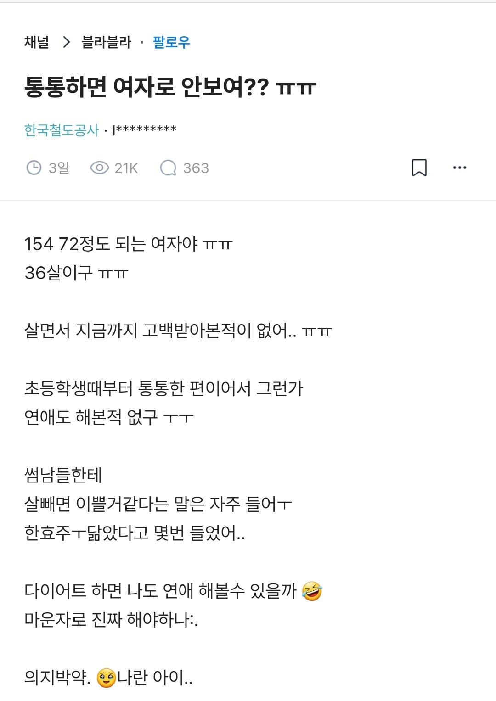
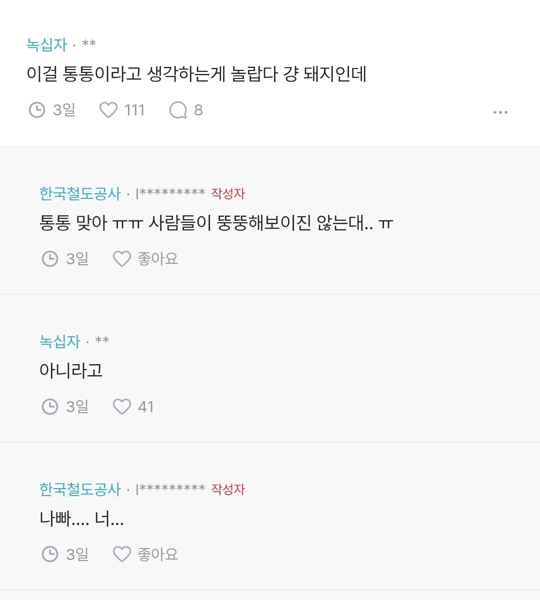
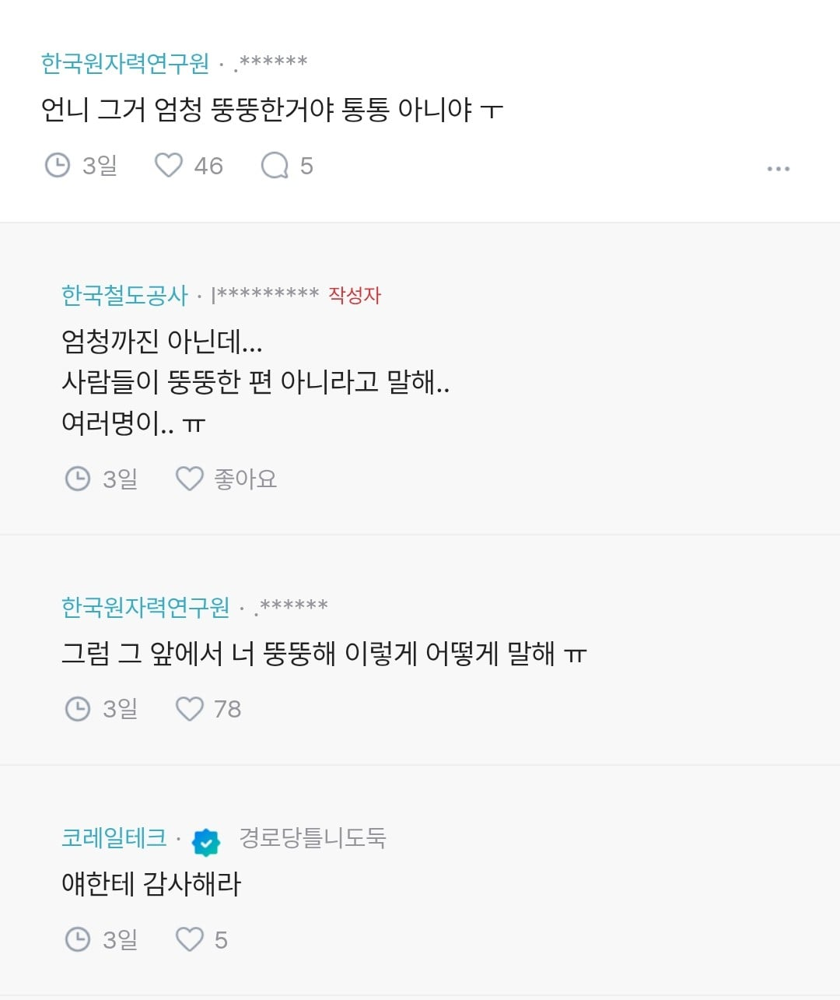
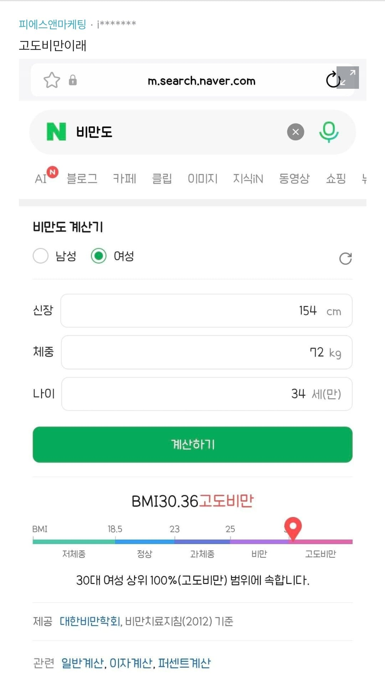

도대체 누가 통통이라고 세뇌시킨거야?




도대체 누가 통통이라고 세뇌시킨거야?
키 160후반대여도 통통이라 그러면 양심없는 체중인데
내가 177에 67이였는데 ㅅㅂ
154에 72는 뭐냐
150대면 60넘어도 뚱뚱함
내가 180에 72인데.....ㅋㅋㅋㅋ
남자도 170에 70이면
운동 하는거 아니면 슬슬 좀 찌나.. 하는 느낌인데
여자가 150대에 70이면 ㅅㅂ ㅋㅋㅋㅋ
나보다 체형이 넓겠는데
남자 173도 권장 몸무게 67~69던데
키도 존만한대 나보다 더 무겁네 ㅋㅋㅋ
36 쳐먹고 나란 아이….
사회생활 하니까 대놓고 돼지라고 못하니 통통 하는거지
이런애들은 진짜 보험 해줘야 한다
마운자로라는 희대의 사기템이 나왔는데 뚱뚱한 사람들 왜 안맞는지 이해가 안됨.
부작용이래봣자 뚱뚱해서 받는 피해보다 큰 사람이 얼마나 있다고
약값 그돈씨가 배민 배달목록으로 전환되었기때문 자신의 풍채유지, 딸배경제향상에 힘쓰는중
마운자로 맞는 거 보다 사회적 기여는 훨씬 크심
키 170이어야 봐줄만할텐데
154/72/34 vs 154/34/72
154에 72.. 저것도 재능이라면 재능이네..
양심 뒤졌나
근돼라는 가정하에는 통통이 맞는데 일반적인 지방덩어리 평균 여자면 돼지가 맞음
프로 선수도 아니고 근돼여도 감당안됨 저건
저키에 근돼고 통통 소리 들으려면 몸무게가 65는 안넘어야
여자는 자기 키 보다 높은 숫자 몸무게면 일단 살이 쪄있는 상태라고 생각함. 씹 근수저라 근육이 미쳐있는거 아니면.. 남자는 키+10kg까진 살이어도 씹돼지 느낌나긴 쉽지 않다고 보거.
150대에 몸무게 70넘으면 시이발 옷으로도 안가려짐
통통 뚠뚠도 아니에요 삼겹살 썰면 비계만 8센치, 살코기 1센치도 안될거 같음
사람을 썬다니 무서워요
154면 55정도여야 통통으로 쳐줄듯
50 넘으면 살찐게 보일정도임
회사에 154정도인 이모님이 38이던데 72면 두명분이네 ㅅㅂ
158에 50초반 만난적 있었는데 이래도 살집 조금 있는편임 근데 70키로대면 ㄹㅇ 굴리면 굴러갈 수준이지
요새는 돈이 좀 들더라도 다이어트약 잘되있는데.. 일단 한번 써보고 본인이 생각하는 통통한 상태를 좀 벗어나 봤으면 좋겠다
걍 좆돼진데
외워라 여자 본인이 말하는 나 돼지야 = 개처말랐음 / 나 좀 통통해 = 좆돼지임

여자 70대는 체형 장난아닌디
주변사럼들이 착하넹
통통 뚱뚱이 문제가 아니라
당장 병원가서 심혈관질환 검사부터 받아봐야 할거같은데
트랩안에서 익사한 일본 곰정도 되려나
와.. 내 와이프가 애 낳고 좀 쪄서 172에 60후반~70초반인데 왠만한 남자보다 어깨 넓은데
155에 72면 얼마나 큰거야?
여자는 근육량 적어서 더 쪄보이지 않나
키-100정도가 대충 정상체중으로 알고 있었는데 저건 뭐 얼마나 찐거냐 ㄷㄷ
딱 보기좋고 건강해보인다고 ㅈㄴ칭찬해버리고싶다
이래서 자기객관화가 중요함
키대비 남자로치면 110키로이상급아녀..?
저런 애들이 자칭 D컵 BBW라고 하는 거겠지
나이도 그렇고 그냥 똥통이네
철도공사 + 저 키 + 저 체격이면
특정인물 검색되는거 아님?
철도공사 직원이 3만명인데 둘 이상은 있겠지
개씹돼지임
72는 좀 중장갑인데